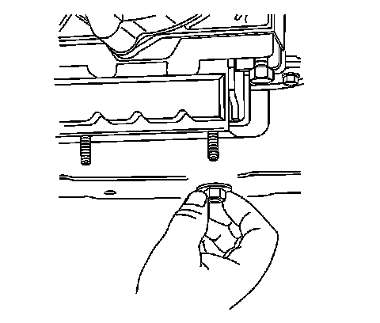
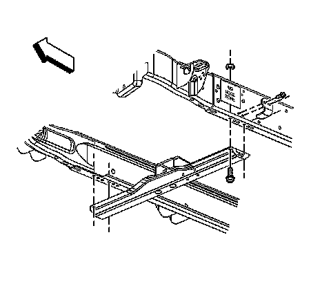
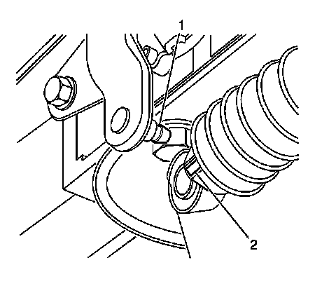
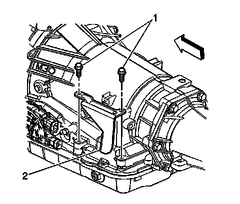
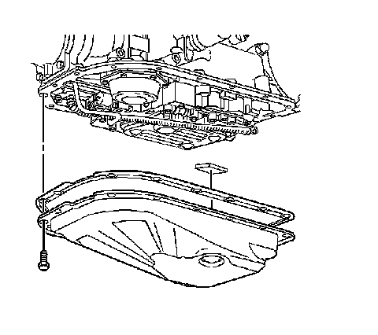
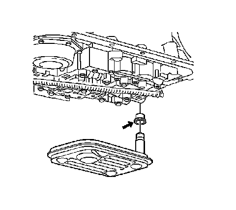

Automatic Transmission Fluid and Filter Replacement
Automatic Transmission Fluid and Filter Replacement
Removal Procedure

1. Raise and suitably support the vehicle. Refer to Lifting and Jacking the Vehicle.
2. Place a drain pan under the transmission oil pan.
3. Remove the oil pan drain plug, if equipped.
4. Allow the transmission fluid to drain completely.
5. Apply a small amount of sealant GM P/N 12346004 (Canadian P/N 10953480), or equivalent to the treads of the drain plug, if equipped.
Notice: Refer to Fastener Notice.
6. Install the oil pan drain plug.
Tighten the oil pan drain plug to 18 N.m (13 lb ft).
7. Remove the drain pan from under the transmission oil pan.
8. Support the transmission with a transmission jack.
9. Remove the transmission mount nuts.

10. Remove the transmission support bolts and nuts.
11. Remove the transmission support side bracket bolts and bracket.
12. Remove the transmission support.

13. Disconnect the range selector cable end (2) from the transmission range selector lever ball stud (1).

Important: It is not necessary to remove the selector cable from the bracket.
14. Remove the transmission range selector cable bracket (2) bolts and bracket from the transmission. Reposition the bracket with cable.

15. Remove the oil pan bolts.
Important: The transmission oil pan gasket is reusable. Inspect the gasket and replace as needed.
16. Remove the oil pan and gasket.
17. Remove the magnet from the bottom of the pan, if necessary.

18. Remove the oil filter.
19. Remove the filter neck seal.
20. Clean the transmission case and the oil pan gasket surfaces with solvent.
Installation Procedure
1. Install the filter neck seal.
2. Install the oil filter.
3. Install the oil pan gasket to the pan.
4. Install the magnet into the bottom of the pan, if necessary.
5. Install the oil pan and bolts.
Tighten the oil pan bolts to 24 N.m (18 lb ft).
6. Position the bracket with cable. Install the transmission range selector cable bracket (2) and bolts to the transmission.
Tighten the selector bracket bolts to 25 N.m (18 lb ft).
7. Connect the range selector cable end (2) to the transmission range selector lever ball stud (1).
8. Install the transmission support.
9. Install the transmission support side bracket and bolts.
10. Install the transmission support bolts and nuts.
Tighten the bolts/nuts to 95 N.m (70 lb ft).
11. Install the transmission mount nuts.
Tighten the nuts to 40 N.m (30 lb ft).
12. Remove the transmission jack.
13. Lower the vehicle.
14. Fill the transmission to the proper level with DEXRON(R) VI transmission fluid. Refer to Transmission Fluid Checking.